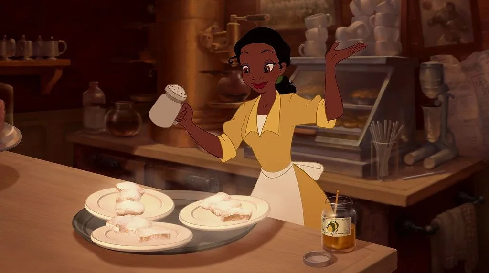

Home
Tiana's Beignets

Description
Tiana's specialty! Fluffy, delicious and —ehem— man-catching (according to her best friend Charlotte).
Ingredients
- 1 1/2 cup buttermilk
- 1/2 cup milk, boiling
- 4 tsp yeast
- 3 tbsp sugar
- 4 3/4 cup flour
- 1/2 tsp baking soda
- 1/2 tsp salt
- oil to fry
- powdered sugar and honey to serve
Steps
- Combine the buttermilk and boiling milk. Stir in the yeast and sugar and let it sit for 5 minutes to
bloom.
- In a mixer, combine the flour, baking soda, and salt. Add in the wet mixture and knead for 3-4 minutes,
the dough should be slightly sticky.
- Let the dough rise for an hour to double in size.
- Onto a floured surface, roll out the dough to 1/4 in thick. Trim edges and cut into rectangles. Let sit
for 15 minutes before frying.
- Fry them for 2 minutes of first side then flip and cook for 30 seconds on other.
- Drain and top with honey and powdered sugar!